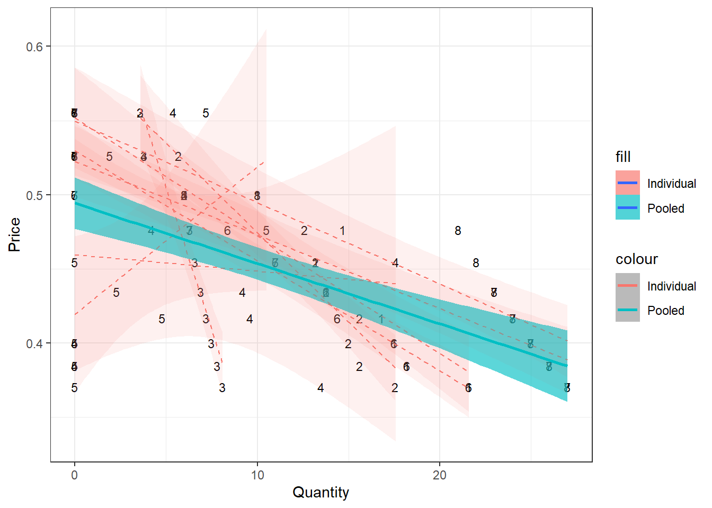
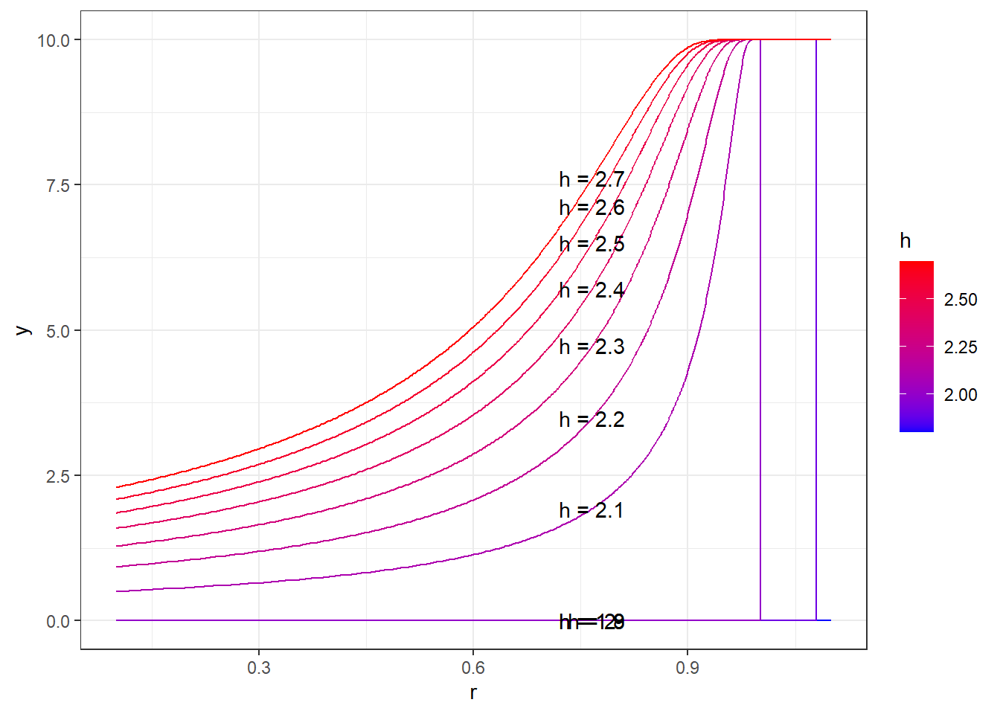
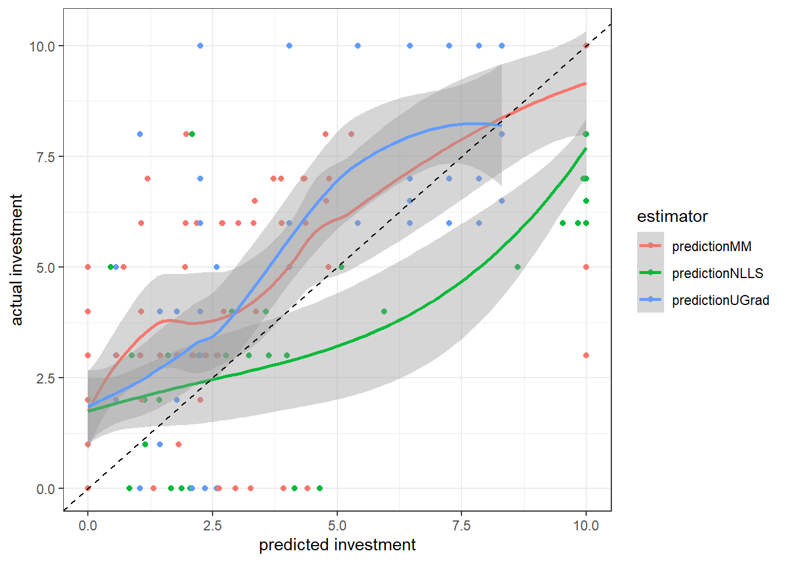
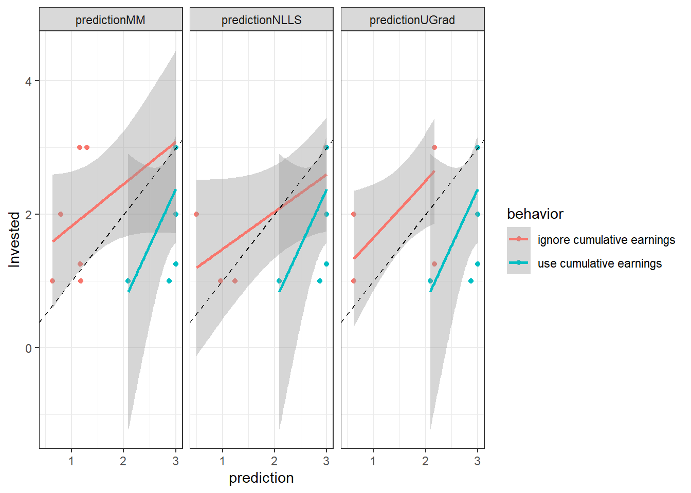
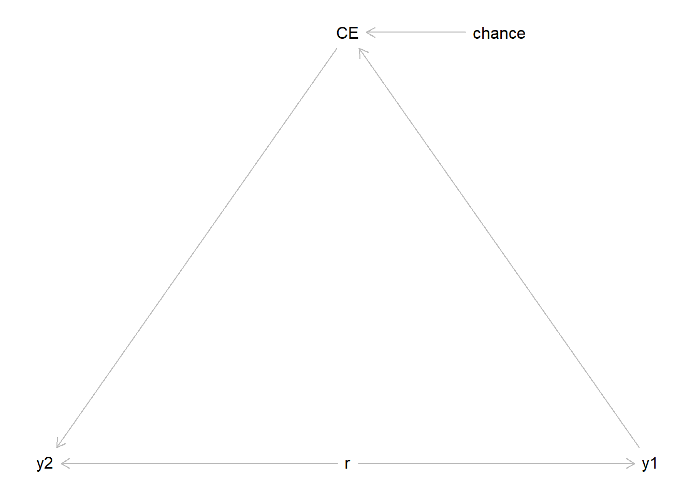
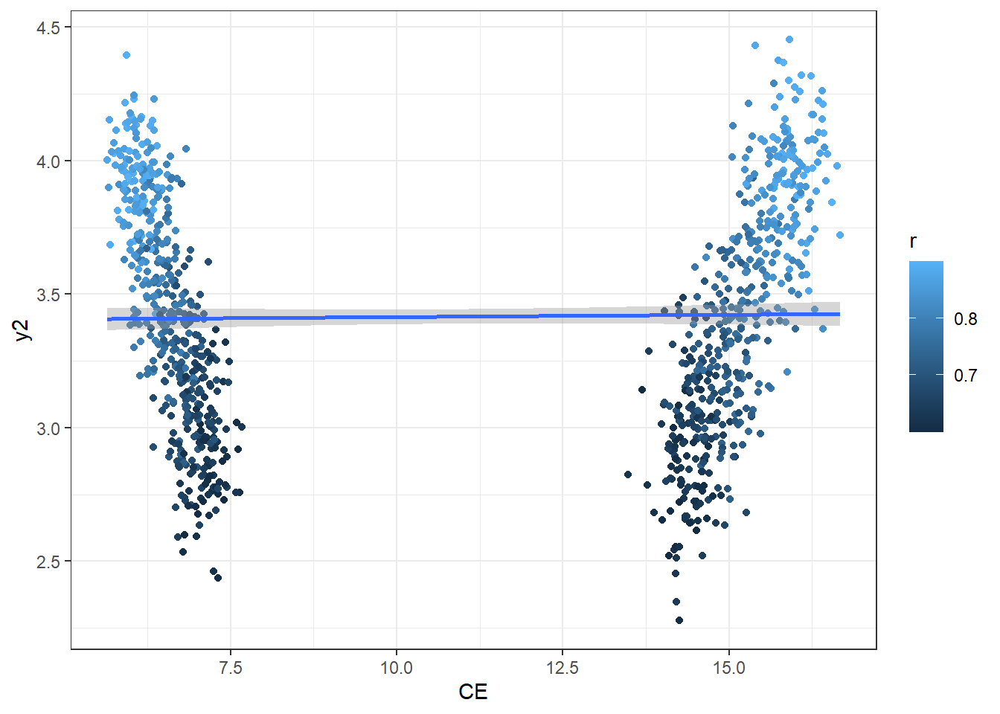
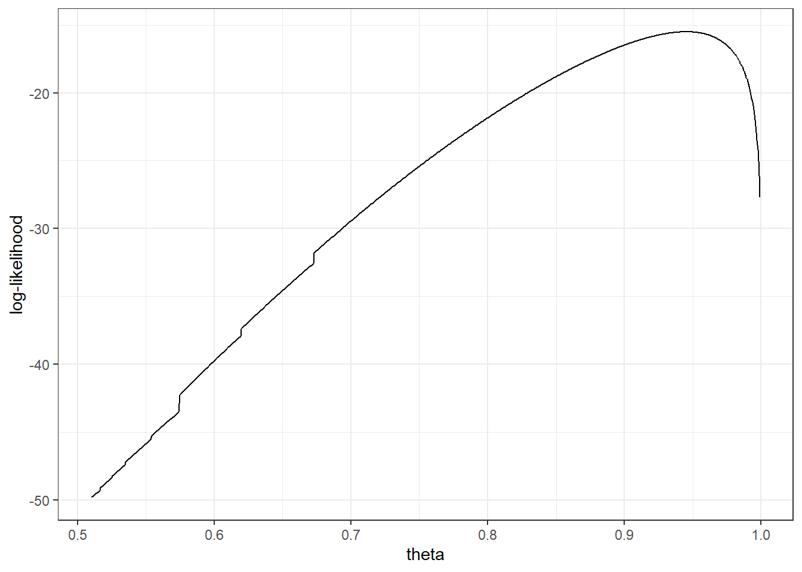

18 Midterm Exam
18.1 Experiment 1
18.1.1 Instructions
PART 1
Decisions: In this experiment, you will be given the opportunity to make a number of investment decisions.
Initial Cash: For each decision, you will be given an initial amount of money that must be invested.
Assets: There are two available assets.
Asset Characteristics: One of the assets will be safer (Asset S), but the other asset will offer the possibility of a higher return (Asset R).
Example: For example, suppose that each dollar invested in Asset S returns $1 for sure, and each dollar invested in Asset R returns either $0 or $2, with each outcome being equally likely. (The returns that you will encounter are different from those in this example, which is for illustrative purposes only.)
Single Round: The experiment will consist of a single round.
Decisions: You will make a number of investment decisions.
Budget: For each decision, you will be given an amount of cash that can either be invested in a safe asset or a risky asset or divided in any manner between the two assets.
Earnings: At the end of the round, your earnings from each investment decision will be calculated, and one of the decisions will be selected at random to determine your earnings for the round.
Final Earnings: Then the earnings from this randomly selected decision will determine your final earnings for the experiment.
Example: To continue the previous example, suppose that you have $5 to invest, and the returns for each dollar invested are: Asset S: returns $1 for each dollar invested, Asset R: returns either $0 or $2 for each dollar invested, with each outcome being equally likely. In other words, each dollar invested in Asset S is yours to keep, and each dollar invested in Asset R will either be lost completely or doubled, depending on whether or not the investment is successful.
Investment Outcome: If you decide to invest some of the initial amount in Asset R, then the throw of a ten-sided die will be used to determine whether or not that investment is successful. In this example, the investment will be unsuccessful if the throw is 1, 2, 3, 4, or 5, and the investment will be successful if the throw is 6, 7, 8, 9, or 10. Since each outcome of the throw is equally likely, there are 5 chances in 10 that the investment is not successful and 5 chances in 10 that the investment is successful. In other words, the chances of success and failure are equal.
Throw of Die: After you have made your investment decision, the computer will generate a random number that represents the die throw; this number is equally likely to be any of the 10 outcomes: 1, 2, 3, 4, 5, 6, 7, 8, 9, or 10.
Allocation: You will be allowed to allocate your initial cash between the assets in any manner, e.g. investing all in one asset, all in the other, or investing some in each. The only requirement is that the amounts invested in Asset S and Asset R sum to the amount of initial cash available for that decision ($5 in this example).
*Example: The asset returns may differ from those given in the previous example. For example, suppose that you have $10.00 to invest. All money invested is transformed: + Asset S: Dollars invested are multiplied by 1. + Asset R: Dollars invested are multiplied by 0 (5 chances out of 10) or by 2.1 (5 chances out of 10). In other words, each dollar invested in Asset S is transformed into $1.00, and each dollar invested in Asset R will either be transformed into $0.00 or into $2.10, depending on whether or not the investment is successful.
Investment Outcome: If you decide to invest some of the initial amount in Asset R, then the throw of a ten-sided die will be used to determine whether or not that investment is successful. In this example, the investment will be unsuccessful if the throw is 1, 2, 3, 4, or 5, and the investment will be successful if the throw is 6, 7, 8, 9, or 10. Since each outcome of the throw is equally likely, there are 5 chances in 10 that the investment is not successful and 5 chances in 10 that the investment is successful. The numbers used in the actual experiment may differ from those in this example and will be shown to you when it is time to make decisions.
Single Round: The experiment will consist of a single decision round.
Decisions: You will make a number of investment decisions.
Budget: For each decision, you will be given an amount of cash that can either be invested in a safe asset or a risky asset or divided in any manner between the two assets.
Earnings: At the end of the round, one of the decisions will be selected at random to determine your earnings for the round.
Final Earnings: Then the earnings from this randomly selected decision will determine your final earnings for the experiment.
PART 2
Decisions: In this experiment, you will be given the opportunity to make a number of investment decisions.
Initial Cash: For each decision, you will be given an initial amount of money that must be invested.
Assets: There are two available assets.
Asset Characteristics: One of the assets will be safer (Asset S), but the other asset will offer the possibility of a higher return (Asset R).
Example: For example, suppose that each dollar invested in Asset S returns $1 for sure, and each dollar invested in Asset R returns either $0 or $2, with each outcome being equally likely. (The returns that you will encounter are different from those in this example, which is for illustrative purposes only.)
Allocation: You will be allowed to allocate your initial cash between the assets in any manner, e.g. investing all in one asset, all in the other, or investing some in each
Rounds: The experiment will consist of a number of rounds.
Single Decision: In each round, you will only make a single decision.
Budget: For this decision, you will be given an amount of cash that can either be invested in a safe asset or a risky asset or divided in any manner between the two assets.
Earnings: At the end of the round, your earnings from the investment decision will be calculated.
Cumulative Earnings: At the end of the round, the earnings from the decision will be added to your cumulative earnings.
Example: To continue the previous example, suppose that you have $5 to invest, and the returns for each dollar invested are:
- Asset S: returns $1 for each dollar invested,
- Asset R: returns either $0 or $2 for each dollar invested, with each outcome being equally likely.
In other words, each dollar invested in Asset S is yours to keep, and each dollar invested in Asset R will either be lost completely or doubled, depending on whether or not the investment is successful.
Investment Outcome: If you decide to invest some of the initial amount in Asset R, then the throw of a ten-sided die will be used to determine whether or not that investment is successful. In this example, the investment will be unsuccessful if the throw is 1, 2, 3, 4, or 5, and the investment will be successful if the throw is 6, 7, 8, 9, or 10. Since each outcome of the throw is equally likely, there are 5 chances in 10 that the investment is not successful and 5 chances in 10 that the investment is successful. In other words, the chances of success and failure are equal.
Throw of Die: After you have made your investment decision, the computer will generate a random number that represents the die throw; this number is equally likely to be any of the 10 outcomes: 1, 2, 3, 4, 5, 6, 7, 8, 9, or 10.
Allocation: You will be allowed to allocate your initial cash between the assets in any manner, e.g. investing all in one asset, all in the other, or investing some in each. The only requirement is that the amounts invested in Asset S and Asset R sum to the amount of initial cash available for that decision ($5 in this example).
Example: The asset returns may differ from those given in the previous example. For example, suppose that you have $3.00 to invest. All money invested is transformed:
- Asset S: Dollars invested are multiplied by 1.
- Asset R: Dollars invested are multiplied by 0 (5 chances out of 10) or by 2.5 (5 chances out of 10).
In other words, each dollar invested in Asset S is transformed into $1.00, and each dollar invested in Asset R will either be transformed into $0.00 or into $2.50, depending on whether or not the investment is successful.
Investment Outcome: If you decide to invest some of the initial amount in Asset R, then the throw of a ten-sided die will be used to determine whether or not that investment is successful. In this example, the investment will be unsuccessful if the throw is 1, 2, 3, 4, or 5, and the investment will be successful if the throw is 6, 7, 8, 9, or 10. Since each outcome of the throw is equally likely, there are 5 chances in 10 that the investment is not successful and 5 chances in 10 that the investment is successful.
Rounds: The experiment will consist of a number of decision rounds.
Single Decision: In each round, you will only make a single decision.
Budget: For this decision, you will be given an amount of cash that can either be invested in a safe asset or a risky asset or divided in any manner between the two assets.
Earnings: At the end of the round, your earnings from the investment decision will be calculated.
Cumulative Earnings: Then the earnings from the decision will be added to your cumulative earnings.
18.1.2 Questions
Note that the task can be re-framed as follows: You have a budget of $10. You can invest as much or as little of this as you like in an asset that pays you $1 if the investment is successful, and $0 otherwise. The investment is successful with probability 50%. Each unit of the asset costs \(\$p\)
That is, the following two mathematical problems have the same solution: \[ \begin{aligned} &\max_y\left(0.5u(10-y+hy)+0.5u(10-y)\right)\\ &\max_y\left(0.5u(10-y+y/p)+0.5u(10-y)\right),\text{ where } p=1/h \end{aligned} \]
Hence, you can think of \(p=1/h\) as the price of the asset, and investment \(y\) as quantity demended. Plot the demand curve for this asset. Show all decisions in Part 1, and a line of best fit that can be interpreted as the class’ demand curve for this asset.
Produce a plot that shows the optimal choice in Part 1, for an expected utility maximizer with utility function \(u(x)=x^r\). Show \(r\) on the horizontal axis, and optimal choice \(y^*\) on the vertcal axis. There should be 10 curves, one for each unique value of the variable “High.Return”. Comment on a range of \(r\) for which it would be difficult to distinguish between behavior for values of \(r\) in this range.
Using data from Part 1, estimate risk preferences for each person …
- 4260 students: assuming that each person’s utility function is either \(u(x)=x^{0.5}\) or \(u(x)=x^{0.8}\).
- 6260 students: assuming that each person’s utility function is by \(u(x)=x^r\). Estimate \(r\) for each person using both a sum of squares estimator (i.e nonlinear least squares) and a money metric estimator.
Plot the predictions made using your estimates (horizontal axis) against actual choices (vertical axis). Add in a \(45^\circ\) line, and comment on how well these predictions are working.
- 6260 students: compare the predictions of both estimators.
In Part 2 of this experiment, your earnings were added up over the four rounds, and you knew your cumulative earnings at the beginnning of a round. Explain why a risk-averse individual with utility function \(u(x)=x^r\) should pay attention to their cumulative earnings when making a decision in Round 4 (i.e. the final round).
Determine whether your estimates from the Part 1 data do better at predicting decisions in Round 4 of Part 2 depending on whether or not people include cumulative earnings in their utility function.
Note that you can compute the cumulative earnings at the beginning of Round 4 by subtracting that round’s earnings from cumulative earnings.(6260 students only) The statement “in Part 2, people will invest more as their cumulative earnings increases” is a testable hypothesis. Explain why a simple linear regression with “Invested” as the dependent variable and “Cumulative earnings” (at the beginning of a round) as the explanatory variable, could not be used to test this assumption. That is, by running: \[ \begin{aligned} \mathrm{Invested}_{i}&=\beta_0+\beta_1\text{(Cumulative earnings)}_i+\epsilon_i \end{aligned} \] then testing: \[ H_0:\ \beta_1 = 0, \quad H_A:\ \beta_1>0 \]
18.2 Experiment 2
18.2.1 Instructions
Rounds: The experiment consists of a sequence of “rounds”.
Guessing Which Cup is Used: In each round, we will use the computer to simulate the draw of a marble from a “cup”. There are two cups, with different mixes of colored marbles, and you will be asked to guess the cup that is being used.
Choosing Which Cup to Use: First, we draw a computer-generated random number which will be either 1, 2, … 6. Think of this as the throw of a die with 6 sides, with each side being equally likely.
- If the roll of the die yields 1 - 3, then the draw will be from the Blue cup, which contains 2 blue marble(s) and 1 red marble(s).
- If the roll of the die yields 4 - 6, then the draw will be from the Red cup, which contains 2 red marble(s) and 1 blue marble(s).
Private Draws: You will not be told in advance the result of the die throw, so you will not know which cup is being used. Once the computerized die throw determines the cup to be used, each of you will be shown a randomly selected marble from that cup. This draw will be your private information and should not be shared with other participants.
Independent Draws: The draws will be done independently, so it is as if we were to shake the cup, pick a marble at random, show it to you, return it to the cup, and shake it again before drawing another randomly selected marble for the next person, so the contents of the cup are always the same when a draw is made.
Groups: All participants are in the same group of size 7.
Decision Sequence: The same cup, Red or Blue, will be used to obtain an independent draw for each person in the group. After each person has seen a private draw, we will begin the sequence in which you will get a chance to indicate the cup that you think is being used (indicate R for red or B for blue). Each of you will be asked in turn for your prediction.
Information: The first person’s prediction will be announced via the computer screen, but the person’s private draw is not revealed. Then the computer will prompt the second person to submit a prediction, which will be announced, but again that person’s private draw will not be revealed.
End of Period: We will continue in this manner, giving everyone a chance to make a prediction in sequence, at which time the computer will reveal which cup was actually used. The private draws, however, will never be revealed.
Earnings: Each person’s money payoff will depend on whether their own predicton turns out to be correct. You will earn: $1.00 for a correct prediction, and $0.00 for an incorrect prediction.
Total Earnings: Your earnings in each period are added to those from previous rounds, and the computer will keep track of your total earnings for all periods.
Record Sheet: Your information and decisions will be organized in a Record Sheet , shown below. On the left side, the first column shows the Round number, and the second column shows Your Draw, blue B or red R, for this round.
Predictions: The next columns display predictions in the Order (1, 2, …) that they are made. When it is your turn to make a prediction, you will see a Predict box. Then enter your prediction, Blue Cup or Red Cup, in the box and remember to press the grey Predict button. An asterisk will be used to distinguish your past predictions from those of others.
Updating History: If it is not your turn, you will be able to see predictions being made as the page refreshes. Total earnings are recorded in the far right column.
18.2.2 Data
I have coded the signals and predictions as \(1=\mathrm{red}\), \(1=\mathrm{blue}\).
There is one file with all of the data: 2021MidtermData2.csv| Round | Group | Position | ID | Own.Signal | Prediction | Actual.Urn | Cumulative.Signals | Cumulative.Predictions |
|---|---|---|---|---|---|---|---|---|
| 1 | 1 | 1 | 1 | 1 | 1 | 0 | 0 | 0 |
| 1 | 1 | 2 | 2 | 0 | 0 | 0 | 1 | 1 |
| 1 | 1 | 3 | 3 | 0 | 0 | 0 | 1 | 1 |
| 1 | 1 | 4 | 4 | 0 | 1 | 0 | 1 | 1 |
| 1 | 1 | 5 | 5 | 1 | 1 | 0 | 1 | 2 |
| 1 | 1 | 6 | 6 | 0 | 0 | 0 | 2 | 3 |
As well as four others, which contain the variables Own.Signal, Prediction, and ID. Each row is a position (from 1 to 8), and each column is a round (from 1 to 20).
18.2.3 Questions
What is the probability that …
- The red cup is used?
- You receive a red signal given that the red cup is used?
- You receive a red signal given that the blue cup is used?
Suppose that (contrary to what actually happened), that you observed all of the signals of everyone who made a decision before you, as well as your own.
- After observing \(b\) blue and \(r\) red signals, what is your belief that the red cup is being used?
- What combination of previous peoples’ signals wouold mean that you would not change your prediction based on your own signal?
Suppose that you are the fourth person to make a prediction, and the first three predictions have all been “red”. Assuming that all people who moved before you made a prediction according to their Bayes’ rule beliefs, what is your belief that we are using the red cup, before observing your own signal? Explain your reasoning. You may assume that if a player had Bayes’ rule beliefs that each cup was equally likely, then they will follow thier signal.
Look at the first three “positions” in the dataset.
- How many cases were there where the third person should have followed their signal? What fraction actually did?
- How many cases were there where the third person’s action should not depend on their action? Of these, some should have followed their signal, and some should not have followed their signal. What fraction of people followed their signal in each of these cases?
Now use the entire dataset. Which of the following models of behavior best fits the data? State your definition of “best fits the data”.
- (6260 students only) People assume that if Bayes’ rule predicts that a person who moved before them should choose red, but in fact they chose blue, then they must have seen a blue signal. The same is true for a red prediction when Bayes’ rule says that they should choose blue.
- People assume that these decisions that are not in accordance with Bayes’ rule are mistakes (i.e. these choices reveal no information about the signal they saw).
- People assume that all people who moved before them have followed their signal (i.e. they ignore all of the choices made by people before them), but update their beliefs based on this.
- People just follow their own signal.
- (Bonus question, no points available) People make decisions according to Bayes’ rule, but make a mistake with probability \(1-\theta\). (i.e. if Bayes’ rule says that someone should choose red, then they will choose red with probability \(\theta\), and blue with probability \(1-\theta\)).
18.3 Solutions
18.3.1 Experiment 2
Note that the task can be re-framed as follows: You have a budget of $10. You can invest as much or as little of this as you like in an asset that pays you $1 if the investment is successful, and $0 otherwise. The investment is successful with probability 50%. Each unit of the asset costs \(\$p\)
That is, the following two mathematical problems have the same solution: \[ \begin{aligned} &\max_y\left(0.5u(10-y+hy)+0.5u(10-y)\right)\\ &\max_y\left(0.5u(10-y+y/p)+0.5u(10-y)\right),\text{ where } p=1/h \end{aligned} \]
Hence, you can think of \(p=1/h\) as the price of the asset, and investment \(y\) as quantity demended. Plot the demand curve for this asset. Show all decisions in Part 1, and a line of best fit that can be interpreted as the class’ demand curve for this asset.
library(dplyr)
library(tidyr)
library(ggplot2)
Q1Data<-(read.csv("2021MidtermData1.csv")
%>% data.frame()
%>% mutate(Price = 1/High.Return)
%>% mutate(QDemand=(Invested/Price))
%>% arrange(Price)
)
(
ggplot(data=Q1Data %>% filter(Part==1),aes(x=QDemand,y=Price))
+geom_text(aes(label=ID),size=3)
+geom_smooth(method="lm",formula=y~x,aes(color="Pooled",fill="Pooled"))
+geom_smooth(method="lm",aes(group=ID,color="Individual",fill="Individual"),formula =y~x,alpha=0.1,linetype="dashed",size=0.5)
+geom_smooth(method="lm",formula=y~x+x*x,aes(color="Pooled",fill="Pooled"))
+xlab("Quantity")+ylab("Price")
+theme_bw()
)
- Produce a plot that shows the optimal choice in Part 1, for an expected utility maximizer with utility function \(u(x)=x^r\). Show \(r\) on the horizontal axis, and optimal choice \(y^*\) on the vertcal axis. There should be 10 curves, one for each unique value of the variable “High.Return”. Comment on a range of \(r\) for which it would be difficult to distinguish between behavior for values of \(r\) in this range.
Solution
h<-sort(unique(Q1Data$High.Return))
y<-seq(0,10,length=1001)
r<-seq(0.1,1.1,length=1001)
ystar<-function(h,r) {
EU = 0.5*(10-y)^r+0.5*(10-y+h*y)^r
y[which.max(EU)]
}
CRRApredictions<-data.frame()
for (hh in h) {
CRRApredictions<-(
data.frame(r)
%>% rowwise()
%>% mutate(y=ystar(hh,r),h=hh)
%>% rbind(CRRApredictions)
)
}
(
ggplot(data=CRRApredictions,aes(x=r,y=y,color=h,group=h))
+geom_line()
+scale_colour_gradient(low="blue",high="red")
+theme_bw()
+geom_text(data= CRRApredictions[CRRApredictions$r==r[floor(length(r)*2/3)],],aes(x=r,y=y,label=paste("h =",h)),color="black")
)
It is most difficult to distinguish behavior when all curves are relatively flat. This occurs for small \(r\) (say, below 0.3) and \(r\) implying risk-loving preferences (\(r>1\)).
Using data from Part 1, estimate risk preferences for each person …
- 4260 students: assuming that each person’s utility function is either \(u(x)=x^{0.5}\) or \(u(x)=x^{0.8}\).
- 6260 students: assuming that each person’s utility function is by \(u(x)=x^r\). Estimate \(r\) for each person using both a sum of squares estimator (i.e nonlinear least squares) and a money metric estimator.
Solution
# 4260 version:
EstimatesUGrad<-(Q1Data %>% filter(Part==1)
%>% rowwise()
%>% mutate(r02Error = ystar(High.Return,0.2)-Invested,
r08Error = ystar(High.Return,0.8)-Invested)
%>% group_by(ID)
%>% summarize(r02MSE = mean(r02Error^2) ,
r08MSE = mean(r08Error^2))
%>% mutate(rHat = ifelse(r02MSE<r08MSE,0.2,0.8))
)To speed up my calculations, I am going to solve for the predictions analytically. I did not ask you to do this:
\[ \begin{aligned} Eu(x\mid y)&=0.5u(10-y+hy)+0.5u(10-y)\\ \text{First order condition:}\ 0&=0.5u'(10-y+hy)(h-1)-0.5u'(10-y)\\ &\quad\quad \text{where: } u'(x)=\frac{d u(x)}{dx}=rx^{r-1} \\ u'(10-y+hy)(h-1)&=u'(10-y)\\ r(h-1)(10-y+hy)^{r-1}&=r(10-y)^{r-1}\\ (h-1)^{\frac{1}{r-1}}(10+(h-1)y)&=10-y\\ y\left((h-1)^\frac{1}{r-1}(h-1)+1\right)&=10\left(1-(h-1)^\frac{1}{r-1}\right)\\ y&=\frac{10\left(1-(h-1)^\frac{1}{r-1}\right)}{(h-1)^\frac{1}{r-1}(h-1)+1} \end{aligned} \] Note that if we had \(\$m\) to allocate instead of \(\$10\), then the optimal choice would just become (this is useful for the money metric calculation): \[ y^*(m)=\frac{m\left(1-(h-1)^\frac{1}{r-1}\right)}{(h-1)^\frac{1}{r-1}(h-1)+1} \] Note that \(y^*\) is homogeneous of degree 1, so:
\[ y^*(m)/m=y^*(1) \]
If a person with risk preferences \(r\) chooses \(y\), their money metric is the solution to:
\[ \begin{aligned} \min_{m\in(0,10)}m&,\quad \text{subject to } 0.5(m+(h-1)y^*(m))^r+0.5(m-y^*(m))^r\geq EU(y)\\ 0.5(m+(h-1)y^*(m))^r&+0.5(m-y^*(m))^r\\ &=0.5\left(m+(h-1)y^*(m)\right)^r+(m-y^*(m))^r\\ &=0.5(m+m(h-1)y^*(m)/m)^r+0.5(m-my^* (m)/m)^r\\ &=0.5m^r\left((1+(h-1)y^*(1))^r+(1-y^*(1))^r\right)\\ m&=\left(\frac{2EU(y)}{(1+(h-1)y^*(1))^r+(1-y^*(1))^r}\right)^{1/r} \end{aligned} \] For the most risky investments (\(h<2\)), I need to worry about corner solutions, so \(y*\) should be constrained to be between 0 and \(m\).
# Sum of squares,NLLS
rHatNLLS<-function(h,invest) {
SSR<-function(r) {
y <- max(c(10*(1-(h-1)^(1/(r-1)))/((h-1)^(r-1)*(h-1)+1),0))
sum((y-invest)^2)
}
optimize(SSR,c(0,1))$minimum
}
# Money metric
MM<-function(h,invest,r) {
# expected utility of choice
EU <-0.5*(10+(h-1)*invest)^r+0.5*(10-invest)^r
# optimal choice given r and h (for m=1)
ys<-max(c((1-(h-1)^(1/(r-1)))/((h-1)^(1/(r-1))*(h-1)+1),0))
# How much money *could* the person have used to be this happy?
m<-(2*EU/((1+(h-1)*ys)^r+(1-ys)^r))^(1/r)
}
rHatMM<-function(h,invest) {
obj<-function(r) {
sum((1-MM(h,invest,r)/10)^2)
}
optimize(obj,c(0,1))$minimum
}
EstimatesMasters<-(Q1Data
%>% filter(Part==1)
%>% group_by(ID)
%>% summarize(
rHatNLLS = rHatNLLS(High.Return,Invested),
rHatMM = rHatMM(High.Return,Invested)
)
)
EstimatesALL<-EstimatesMasters %>% left_join((EstimatesUGrad %>% select(ID,rHat)),key=ID)
EstimatesALL %>% knitr::kable()| ID | rHatNLLS | rHatMM | rHat |
|---|---|---|---|
| 1 | 0.9903955 | 0.6195986 | 0.8 |
| 2 | 0.9904305 | 0.5743551 | 0.8 |
| 3 | 0.4832038 | 0.2084164 | 0.2 |
| 4 | 0.6024341 | 0.5781600 | 0.2 |
| 5 | 0.0000527 | 0.3647781 | 0.2 |
| 6 | 0.9321971 | 0.5724567 | 0.8 |
| 7 | 0.9904026 | 0.9996780 | 0.8 |
| 8 | 0.9904163 | 0.9996664 | 0.8 |
Plot the predictions made using your estimates (horizontal axis) against actual choices (vertical axis). Add in a \(45^\circ\) line, and comment on how well these predictions are working.
- 6260 students: compare the predictions of both estimators.
Solution
ystar<-function(m,h,r) {
max(c(m*(1-(h-1)^(1/(r-1)))/((h-1)^(1/(r-1))*(h-1)+1),0))
}
rHatPredictions<-(
Q1Data
%>% left_join(EstimatesALL,key=ID)
%>% mutate(budget = ifelse(Part==1,10,3))
%>% rowwise()
%>% mutate(
predictionUGrad = ystar(Budget,High.Return,rHat),
predictionNLLS = ystar(Budget,High.Return,rHatNLLS),
predictionMM = ystar(Budget,High.Return,rHatMM)
)
%>% pivot_longer(starts_with("prediction"),names_to="estimator",values_to="prediction")
)
(
ggplot(rHatPredictions %>% filter(Part==1),aes(x=prediction,y=Invested,color=estimator))
+geom_point()
+geom_smooth(method="loess")
+theme_bw()+xlab("predicted investment")+ylab("actual investment")
+geom_abline(intercept=0,slope=1,linetype="dashed")
)
It looks like the money metric estimator is doing best (it is best calibrated to the \(45^\circ\) line). We can evaluate their performance using (within-sample) mean squared error as follows:
(rHatPredictions %>% filter(Part==1)
%>% group_by(estimator)
%>% summarize(MSE = mean((Invested-prediction)^2))
%>% knitr::kable()
)| estimator | MSE |
|---|---|
| predictionMM | 7.111649 |
| predictionNLLS | 7.120137 |
| predictionUGrad | 6.517881 |
- In Part 2 of this experiment, your earnings were added up over the four rounds, and you knew your cumulative earnings at the beginnning of a round. Explain why a risk-averse individual with utility function \(u(x)=x^r\) should pay attention to their cumulative earnings when making a decision in Round 4 (i.e. the final round).
Solution
Let \(w\) be the cumulative earnings at the beginning of Round 4. If you invest \(y\), then you will end up with either \(w+3-y\) or \(w+3+(h-1)y\), so your utility-maximization problem in the 4th round is:
\[ \max_{y\in[0,3]}\left(0.5(w+3-y)^r+0.5(w+3+(h-1)y)^r\right) \] Unless \(r=1\), your optimal choice will depend on \(w\).
- Determine whether your estimates from the Part 1 data do better at predicting decisions in Round 4 of Part 2 depending on whether or not people include cumulative earnings in their utility function.
Note that you can compute the cumulative earnings at the beginning of Round 4 by subtracting that round’s earnings from cumulative earnings.
Solution
I have made already predictions assuming cumulative earnings are ignored.
rHatPredictions2<-rHatPredictions %>% filter(Part==2 & Round==4) %>% mutate(w = Cumulative.Earnings-Earnings)
PredictionsIgnore<-rHatPredictions2 %>% mutate(behavior = "ignore cumulative earnings")
y<-seq(0.001,0.999,length=1000)
ymaxw<-function(w,budget,h,r) {
U<-0.5*(w+budget-y*budget)^r+0.5*(w+budget +(h-1)*y*budget)^r
y[which.max(U)]*budget
}
PredictionsUseW<-rHatPredictions2 %>% mutate(behavior = "use cumulative earnings") %>% rowwise() %>% mutate(prediction = ymaxw(w,Budget,High.Return,rHat))
Part2Predictions<-rbind(PredictionsIgnore,PredictionsUseW)
(
ggplot(data=Part2Predictions,aes(x=prediction,y=Invested,color=behavior))
+geom_point()
+geom_smooth(method="lm")
+facet_wrap(~estimator)
+theme_bw()
+geom_abline(intercept=0,slope=1,linetype="dashed")
)
The “eyeball” comparison looks like the “ignore cumulative earnings” assumption makes better predictions. To verify this, let’s use out-of-sample mean squared prediction error:
(Part2Predictions
%>% group_by(estimator,behavior)
%>% summarize(MSE = mean((Invested-prediction)^2))
%>% knitr::kable()
)| estimator | behavior | MSE |
|---|---|---|
| predictionMM | ignore cumulative earnings | 0.9893864 |
| predictionMM | use cumulative earnings | 1.0916115 |
| predictionNLLS | ignore cumulative earnings | 0.6717090 |
| predictionNLLS | use cumulative earnings | 1.0916115 |
| predictionUGrad | ignore cumulative earnings | 0.7177483 |
| predictionUGrad | use cumulative earnings | 1.0916115 |
Indeed, all estimators make better predictions if we assume that people narrowly bracket.
- (6260 students only) The statement “in Part 2, people will invest more as their cumulative earnings increases” is a testable hypothesis. Explain why a simple linear regression with “Invested” as the dependent variable and “Cumulative earnings” (at the beginning of a round) as the explanatory variable, could not be used to test this assumption. That is, by running: \[ \begin{aligned} \mathrm{Invested}_{i}&=\beta_0+\beta_1\text{(Cumulative earnings)}_i+\epsilon_i \end{aligned} \] then testing: \[ H_0:\ \beta_1 = 0, \quad H_A:\ \beta_1>0 \]
Solution The problem is that risk aversion will affect both:
- cumulative earnings, because in previous rounds I will invest less if I am more risk averse, and
- The error term \(\epsilon_i\), because I will invest less in this round if I am more risk averse.
Hence \(r_i\) is a component of the error term (\(\mathrm{cov}(\epsilon_i,r_i)>0\)), and \(\mathrm{cov(r_i,\text{Cumulative Earnings})}>0\). Therefore, \(\hat\beta_1\) will be biased.
library(dagitty)
g<-dagitty('dag {
y2 [pos="0,1"]
r [pos="1,1"]
y1 [pos="2,1"]
chance [pos="1.5,0"]
CE [pos="1,0"]
y2<-r->y1
y2<-CE<-y1
chance->CE
}')
plot(g)
paths(g,"CE","y2")## $paths
## [1] "CE -> y2" "CE <- y1 <- r -> y2"
##
## $open
## [1] TRUE TRUEThis suggests that conditioning on \(y_1\) or \(r\) (if measured perfectly), or instrumenting with chance, solves this problem.
Here is a numerical example (which I didn’t ask you for).
SampleD<-function() {
h<-2.5
r<-0.6+0.3*runif(1000)
chance<-(runif(length(r))<0.5)
d<-(data.frame(r,chance)
%>% rowwise()
%>% mutate(
y1 = max(c(10*(1-(h-1)^(1/(r-1)))/((h-1)^(r-1)*(h-1)+1),0))+0.2*rnorm(1),
y2 = max(c(10*(1-(h-1)^(1/(r-1)))/((h-1)^(r-1)*(h-1)+1),0))+0.2*rnorm(1),
CE=10-y1+h*y1*chance
)
)
}
pltData<-SampleD()
(
ggplot(pltData,aes(x=CE,y=y2,color=r))
+geom_point()
+geom_smooth(method="lm",formula=y~x)
+theme_bw()
)
library(stargazer)
library(AER)
stargazer(lm(data=pltData,formula=y2~CE),lm(data=pltData,formula=y2~CE +y1),lm(data=pltData,formula=y2~CE +r),type="html")| Dependent variable: | |||
| y2 | |||
| (1) | (2) | (3) | |
| CE | 0.002 | -0.003* | -0.001 |
| (0.003) | (0.002) | (0.001) | |
| y1 | 0.778*** | ||
| (0.020) | |||
| r | 4.377*** | ||
| (0.070) | |||
| Constant | 3.398*** | 0.799*** | 0.146*** |
| (0.037) | (0.070) | (0.055) | |
| Observations | 1,000 | 1,000 | 1,000 |
| R2 | 0.0003 | 0.612 | 0.797 |
| Adjusted R2 | -0.001 | 0.611 | 0.797 |
| Residual Std. Error | 0.436 (df = 998) | 0.272 (df = 997) | 0.196 (df = 997) |
| F Statistic | 0.290 (df = 1; 998) | 786.841*** (df = 2; 997) | 1,958.033*** (df = 2; 997) |
| Note: | p<0.1; p<0.05; p<0.01 | ||
SampleEstimates<-function() {
data<-SampleD()
ols1<-summary(lm(data=data,formula=y2~CE))$coefficients["CE",4]
ols2<-summary(lm(data=data,formula=y2~CE+y1))$coefficients["CE",4]
ols3<-summary(lm(data=data,formula=y2~CE+r))$coefficients["CE",4]
ols4<-summary(lm(data=data,formula=y2~CE+r+y1))$coefficients["CE",4]
IV<-summary(ivreg(y2 ~ CE | chance, data = data))$coefficients["CE",4]
c(ols1,ols2,ols3,ols4,IV)
}
SAMPLES<-data.frame()
for (ss in 1:100){
pval<-SampleEstimates();
model<-c("y2~CE","y2~CE+y1","y2~CE+r","y2~CE+y1+r","IV")
SAMPLES<-rbind(SAMPLES,data.frame(pval,model))
}(
ggplot(SAMPLES,aes(x=pval))
+stat_ecdf()
+geom_abline(intercept=0,slope=1,linetype="dashed")
+facet_wrap(~model)
+theme_bw()
+geom_hline(yintercept=0.05,color="red")
)
SAMPLES %>% group_by(model) %>% summarize(rejectProb = mean(1*(pval<0.05))) %>% knitr::kable() 18.3.2 Experiment 2
What is the probability that …
- The red cup is used?
- You receive a red signal given that the red cup is used?
- You receive a red signal given that the blue cup is used?
Solution \[ \begin{aligned} p(R)&=0.5\\ p(r\mid R)&=\frac{2}{3}\\ p(r\mid B)&=\frac{1}{3} \end{aligned} \]
- Suppose that (contrary to what actually happened), that you observed all of the signals of everyone who made a decision before you, as well as your own.
- After observing \(b\) blue and \(r\) red signals, what is your belief that the red cup is being used?
- What combination of previous peoples’ signals wouold mean that you would not change your prediction based on your own signal?
Solution
\[ \begin{aligned} p(R\mid r,b)&=\frac{ p(r,b \mid R)p(R)}{ p(r,b \mid R)p(R)+ p(r,b \mid B)p(B)}\\ &=\frac{\left(\frac{2}{3}\right)^r\left(\frac{1}{3}\right)^b\times 0.5}{\left(\frac{2}{3}\right)^r\left(\frac{1}{3}\right)^b\times 0.5+\left(\frac{1}{3}\right)^r\left(\frac{2}{3}\right)^b\times 0.5}\\ &=\frac{2^r}{2^r+2^b}=\frac{1}{1+2^{b-r}} \end{aligned} \] Note that whether the fraction is greater or less than \(\frac{1}{2}\) depends on whether \(r-b>0\) or \(r-b<0\). So if \(r-b\geq 2\), then I would make a red prediction irrespective of my own signal, and if \(r-b\leq -2\) i would make a blue prediction irrespective of my own signal.
- Suppose that you are the fourth person to make a prediction, and the first three predictions have all been “red”. Assuming that all people who moved before you made a prediction according to their Bayes’ rule beliefs, what is your belief that we are using the red cup, before observing your own signal? Explain your reasoning. You may assume that if a player had Bayes’ rule beliefs that each cup was equally likely, then they will follow thier signal.
Solution
- The first person must have observed a red ball, because otherwise they would have predicted “blue”.
- The second person must also have seen a red ball, because if they had seen a blue ball, their belief would place 50% on red, and so they would follow their own signal.
- The third player would have chosen red irrespective of their own signal, because they know that the first and second people had red signals: \(p(R\mid r=2,b=1)>\frac{1}{2}\) and \(p(R\mid r=3,b=0)>\frac{1}{2}\)
- As the fourth person, all I know is that the first two signals were red, so before observing my own signal, my beleif in the red cup is: \[ p(R \mid r=2,b=0)=\frac{1}{1+2^{-2}}=\frac{1}{1+0.25}=\frac{1}{5/4}=4/5 \] You would not change my action based on your own signal.
- Look at the first three “positions” in the dataset.
- How many cases were there where the third person should have followed their signal? What fraction actually did?
- How many cases were there where the third person’s action should not depend on their action? Of these, some should have followed their signal, and some should not have followed their signal. What fraction of people followed their signal in each of these cases?
Solution
D<-read.csv("2021MidtermData2.csv") %>% data.frame()
Own.Signal<-read.csv("2021MidtermData2OwnSignal.csv") %>% data.frame() %>% select(-X)
Prediction<-read.csv("2021MidtermData2Prediction.csv") %>% data.frame() %>% select(-X)
d<-(D %>% filter(Position==3))
d$Bayes.Prediction<-d$Own.Signal
d$Bayes.Prediction[d$Cumulative.Predictions==2]<-1
d$Bayes.Prediction[d$Cumulative.Predictions==0]<-0
d<-(d
%>% mutate(Followed.Prediction =Bayes.Prediction==Prediction,
Should.Follow.Signal = Bayes.Prediction==Own.Signal,
Followed.Signal = Own.Signal==Prediction,
Cascade = Cumulative.Signals!=1)
%>% group_by(Cascade,Should.Follow.Signal)
%>% summarize(count=n(),Fraction.Followed=mean(Followed.Signal))
)
knitr::kable(d)| Cascade | Should.Follow.Signal | count | Fraction.Followed |
|---|---|---|---|
| FALSE | TRUE | 8 | 1.0 |
| TRUE | FALSE | 2 | 0.5 |
| TRUE | TRUE | 10 | 1.0 |
- Now use the entire dataset. Which of the following models of behavior best fits the data? State your definition of “best fits the data”.
- (6260 students only) People assume that if Bayes’ rule predicts that a person who moved before them should choose red, but in fact they chose blue, then they must have seen a blue signal. The same is true for a red prediction when Bayes’ rule says that they should choose blue.
- People assume that these decisions that are not in accordance with Bayes’ rule are mistakes (i.e. these choices reveal no information about the signal they saw).
- People assume that all people who moved before them have followed their signal (i.e. they ignore all of the choices made by people before them), but update their beliefs based on this.
- People just follow their own signal.
- (Bonus question, no points available) People make decisions according to Bayes’ rule, but make a mistake with probability \(1-\theta\). (i.e. if Bayes’ rule says that someone should choose red, then they will choose red with probability \(\theta\), and blue with probability \(1-\theta\)).
Solution
PrR<-0.5
PrSignal<-2/3
ModelA<-function(Own.Signal,Prediction) {
nR<-rep(0,dim(Prediction)[2])
nB<-rep(0,dim(Prediction)[2])
Model.Choice<-c()
for (pp in 1:dim(Prediction)[1]) {
# person acts as if they observe nR red signals and nB blue signals
bR<-nR+1*(Own.Signal[pp,]==1)
bB<-nB+(Own.Signal[pp,]==0)
p<-1/(1+2^(bB-bR))
Model.Choice<-rbind(Model.Choice,1*(p>0.5)+(p==0.5)*Own.Signal[pp,])
# update signals
blueCascade<-(nB-nR)>=2
redCascade<-(nR-nB)>=2
noCascade<- !(blueCascade | redCascade)
# If it is not a cascade, the person must have reported truthfully
nR[noCascade]<-nR[noCascade]+Prediction[pp,noCascade] %>% unlist()
nB[noCascade]<-nB[noCascade]+1-Prediction[pp,noCascade] %>% unlist()
# if it is a cascade, then I only update if this
if (sum((redCascade & (Prediction[pp,]==0)))>=1) {
nB[redCascade & (Prediction[pp,]==0)]<-nB[redCascade & (Prediction[pp,]==0)]+1 %>% unlist()
}
if (sum(blueCascade & (Prediction[pp,]==0))>=1) {
nR[blueCascade & (Prediction[pp,]==1)] <-nR[(blueCascade & Prediction[pp,]==1)]+1 %>% unlist()
}
nR<-nR %>% unlist()
nB<-nB %>% unlist()
}
Model.Choice
}
ModelB<-function(Own.Signal,Prediction) {
nR<-rep(0,dim(Prediction)[2])
nB<-rep(0,dim(Prediction)[2])
Model.Choice<-matrix(-1,dim(Prediction)[1],dim(Prediction)[2])
for (pp in 1:dim(Prediction)[1]) {
# person acts as if they observe nR red signals and nB blue signals
bR<-nR+(Own.Signal[pp,]==1) %>% unlist()
bB<-nB+(Own.Signal[pp,]==0) %>% unlist()
p<-1/(1+2^(bB-bR))
Model.Choice[pp,]<-1*(p>0.5)+(p==0.5)*Own.Signal[pp,] %>% unlist()
# update signals
blueCascade<-(nB-nR)>=2 %>% unlist()
redCascade<-(nR-nB)>=2 %>% unlist()
noCascade<- !(blueCascade | redCascade) %>% unlist()
# This model only updates signals if there was not an information cascade in the previous period
nR[noCascade]<-nR[noCascade]+Prediction[pp,noCascade] %>% unlist()
nB[noCascade]<-nB[noCascade]+1-Prediction[pp,noCascade] %>% unlist()
}
Model.Choice
}
ModelC<-function(Own.Signal,Prediction) {
nR<-rep(0,dim(Prediction)[2]) %>% unlist()
nB<-rep(0,dim(Prediction)[2]) %>% unlist()
Model.Choice<-matrix(-1,dim(Prediction)[1],dim(Prediction)[2])
for (pp in 1:dim(Prediction)[1]) {
# person acts as if they observe nR red signals and nB blue signals
bR<-nR+(Own.Signal[pp,]==1) %>% unlist()
bB<-nB+(Own.Signal[pp,]==0) %>% unlist()
p<-1/(1+2^(bB-bR)) %>% unlist()
Model.Choice[pp,]<-1*(p>0.5)+(p==0.5)*Own.Signal[pp,] %>% unlist()
# update signals
nR<-nR+Prediction[pp,] %>% unlist()
nB<-nB+1-Prediction[pp,] %>% unlist()
}
Model.Choice
}
ModelD<-function(Own.Signal,Prediction) {
Own.Signal
}For the bonus question, note that there are four possible cases in each stage of the game, each with probability:
STATES<-rbind(c("$\\frac{2}{3}p(R)$","$\\frac{1}{3}(1-p(R))$"),c("$\\frac{1}{3}p(R)$","$\\frac{2}{3}(1-p(R))$"))
colnames(STATES)<-c("R","B")
rownames(STATES)<-c("r","b")
knitr::kable(t(STATES))| r | b | |
|---|---|---|
| R | \(\frac{2}{3}p(R)\) | \(\frac{1}{3}p(R)\) |
| B | \(\frac{1}{3}(1-p(R))\) | \(\frac{2}{3}(1-p(R))\) |
Where capital letters denote states of the world, and lower case denote signals. Let’s call this matrix \(S\)
Following each signal, we can determine the previous person’s posterior beliefs: \[ P=\begin{pmatrix}\frac{2p(R)}{2p(R)+1-p(R)} & \frac{p(R)}{p(R)+2(1-p(R))}\end{pmatrix}^\top \] (i.e. beliefs after red and blue signals, respectively). Let: \[ T(x)=\begin{cases} \theta &\text{ if }x>0.5\\ 1-\theta &\text{ if }x<0.5\\ 0.5&\text{ if } x=0.5 \end{cases} \] Therefore the probability of choosing a red prediction following each of these signals is: \[ \tau = \begin{pmatrix}T\left(\frac{2p(R)}{2p(R)+1-p(R)}\right) & T\left( \frac{p(R)}{p(R)+2(1-p(R))}\right)\end{pmatrix}^\top \]
So the probability that the previous player makes a red prediction, conditional on the state, is:
\[ \begin{aligned} R&=S\tau \end{aligned} \] And so the posterior probability of the red state, given the previous player’s prediction, is: \[ \begin{aligned} p(R\mid r)&=\frac{R_1p(R)}{R_1p(R)+R_2(1-p(R))}\\ p(R\mid b)&=\frac{(1-R_1)p(R)}{(1-R_1)p(R)+(1-R_2)(1-p(R))}\\ \end{aligned} \]
PrSignal<-2/3
ModelE<-function(Own.Signal,Prediction,theta) {
Tfun<-function(p) {theta*(p>0.5)+(1-theta)*(p<0.5)+0.5*(theta==0.5)}
PredictProb<-c()
for (ii in 1:dim(Prediction)[2]) {
prediction<-Prediction[,ii]
own.signal<-Own.Signal[,ii]
prior<-c(0.5,0.5)
predprob<-c()
for (tt in 1:length(own.signal)) {
S<-rbind(c(PrSignal*prior[1],(1-PrSignal)*prior[1]),c((1-PrSignal)*prior[2],PrSignal*prior[2]))
P<-c(PrSignal*prior[1]/(PrSignal*prior[1]+(1-PrSignal)*prior[2]),
(1-PrSignal)*prior[1]/((1-PrSignal)*prior[1]+PrSignal*prior[2]))
tau<-Tfun(P)
predprob<-c(predprob,tau[2-1*own.signal[tt]])
R<-S%*% tau
pRr<-R[1]*prior[1]/(R[1]*prior[1]+R[2]*prior[2])
pRb<-(1-R[1])*prior[1]/((1-R[1])*prior[1]+(1-R[2])*prior[2])
pp<-pRr*prediction[tt]+pRb*(1-prediction[tt])
prior<-c(pp,1-pp)
}
PredictProb<-cbind(PredictProb,predprob)
}
PredictProb
}# Estimate theta in Model E using MLE
thetaGrid<-seq(0.51,0.999,length=1000)
MLE<-(data.frame(thetaGrid)
%>% rowwise()
%>% mutate(
LL = sum(Prediction*log(ModelE(Own.Signal,Prediction,thetaGrid)))
)
)
(
ggplot(data=MLE,aes(x=thetaGrid,y=LL))
+geom_line()
+theme_bw()
+xlab("theta")
+ylab("log-likelihood")
)
thetaHat<-MLE$thetaGrid[which.max(MLE$LL)]ModelA(Own.Signal,Prediction)## V1 V2 V3 V4 V5 V6 V7 V8 V9 V10 V11 V12 V13 V14 V15 V16 V17 V18 V19 V20
## 1 1 0 1 0 1 1 1 0 0 1 0 0 1 1 1 0 0 1 1 0
## 2 0 0 1 0 0 0 1 0 1 0 1 0 1 0 1 0 0 1 1 1
## 3 0 0 1 0 0 0 1 0 1 0 1 0 1 0 1 0 0 1 1 0
## 4 0 0 1 0 1 0 1 0 1 1 0 1 1 1 1 0 0 1 1 0
## 5 1 0 1 0 1 0 1 1 1 0 1 0 1 0 1 0 0 1 1 0
## 6 0 0 1 1 1 0 1 0 1 0 0 0 1 0 1 0 0 1 1 0
## 7 0 0 1 0 1 1 1 0 1 0 1 0 1 0 1 0 0 1 1 0Prediction## V1 V2 V3 V4 V5 V6 V7 V8 V9 V10 V11 V12 V13 V14 V15 V16 V17 V18 V19 V20
## 1 1 0 1 0 1 1 1 0 0 1 0 1 1 1 1 0 0 1 1 0
## 2 0 0 1 0 0 0 1 0 1 0 1 0 1 0 1 0 0 1 1 0
## 3 0 0 1 1 0 0 1 0 1 0 1 0 1 0 1 0 0 1 1 0
## 4 1 0 1 0 1 0 1 1 1 0 0 1 1 0 1 0 0 1 1 0
## 5 1 1 1 1 1 1 1 0 1 0 1 0 1 0 1 0 0 1 1 0
## 6 0 0 1 0 1 1 1 0 1 0 0 0 1 0 1 0 0 1 1 0
## 7 0 0 1 0 1 1 1 0 1 1 1 0 1 0 1 0 0 1 1 0FIT<-c(mean((Prediction-ModelA(Own.Signal,Prediction))^2),
mean((Prediction-ModelB(Own.Signal,Prediction))^2),
mean((Prediction-ModelC(Own.Signal,Prediction))^2),
mean((Prediction-ModelD(Own.Signal,Prediction))^2),
mean((Prediction-ModelE(Own.Signal,Prediction,thetaHat))^2)
)
FIT<-cbind(c("A - Choices against Bayes' rule reveal the signal","B - Choices against Bayes' rule reveal no information","C - People assume that predictions are signals","D - People follow their own signal","E - Choose according to Bayes' rule with probability $\\theta$"),round(FIT,3))
colnames(FIT)<-c("Model","Mean squated prediction error")
knitr::kable(FIT)| Model | Mean squated prediction error |
|---|---|
| A - Choices against Bayes’ rule reveal the signal | NA |
| B - Choices against Bayes’ rule reveal no information | NA |
| C - People assume that predictions are signals | NA |
| D - People follow their own signal | NA |
| E - Choose according to Bayes’ rule with probability \(\theta\) | NA |
Here I use (within-sample) mean squared prediction error, so lower numbers are better. It seems that models A-C are the best (there is not much practical difference between the MSPE for these models). Importantly, all models that include some kind of learning from other peoples’ signals outperform Model D, which assumes no learning.
And here is another model, assuming that people are more likely to predict red as their belief in red increases. That is, if they believe that the probability of red is \(p\), then they will predict red with probability \((1+\exp(-\theta (p-(1-p))))\). Note that \(p-(1-p)\) is the utility difference between chooseing red and blue.
ModelF<-function(Own.Signal,Prediction,theta) {
Tfun<-function(p) {(1/(1+exp(-theta*(p-(1-p)))))}
PredictProb<-c()
for (ii in 1:dim(Prediction)[2]) {
prediction<-Prediction[,ii]
own.signal<-Own.Signal[,ii]
prior<-c(0.5,0.5)
predprob<-c()
for (tt in 1:length(own.signal)) {
S<-rbind(c(PrSignal*prior[1],(1-PrSignal)*prior[1]),c((1-PrSignal)*prior[2],PrSignal*prior[2]))
P<-c(PrSignal*prior[1]/(PrSignal*prior[1]+(1-PrSignal)*prior[2]),
(1-PrSignal)*prior[1]/((1-PrSignal)*prior[1]+PrSignal*prior[2]))
tau<-Tfun(P)
predprob<-c(predprob,tau[2-1*own.signal[tt]])
R<-S%*% tau
pRr<-R[1]*prior[1]/(R[1]*prior[1]+R[2]*prior[2])
pRb<-(1-R[1])*prior[1]/((1-R[1])*prior[1]+(1-R[2])*prior[2])
pp<-pRr*prediction[tt]+pRb*(1-prediction[tt])
prior<-c(pp,1-pp)
}
PredictProb<-cbind(PredictProb,predprob)
}
PredictProb
}
# Estimate theta in Model E using MLE
obj<-function(t) {-sum(
Prediction*log(ModelF(Own.Signal,Prediction,t))
+(1-Prediction)*log(1-ModelF(Own.Signal,Prediction,t))
)}
OptimF<-optimize(obj,c(0,10))
print(OptimF)
Fit<-rbind(FIT,c("F - logistic choice", round(mean((Prediction-ModelF(Own.Signal,Prediction,OptimF$minimum))^2),3)))
knitr::kable(Fit)Model F does about as well as A-C